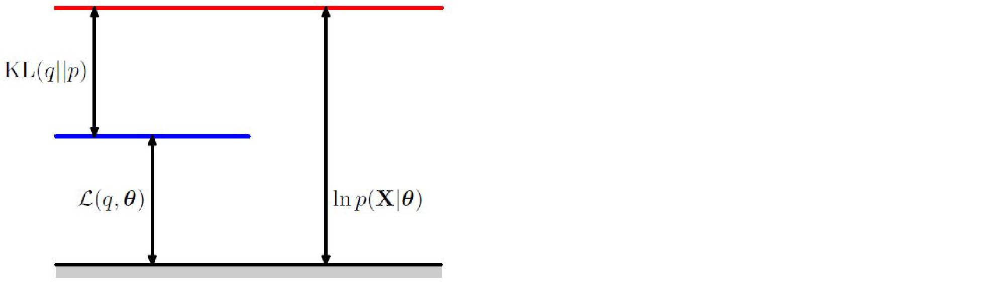

Expectation Maximization
We discussed the EM algorithm on Gaussian Mixture models in the previous post. In a Gaussian mixture model, the goal is to maximize the likelihood function with respect to the parameters (comprising the means and covariances of the components and the mixing coefficients).
- Initialize the means $\mu_k$, covariances $\Sigma_k$ and mixing coefficients $\pi_k$ , and evaluate the initial value of the log likelihood.
- E step: Evaluate the responsibilities using the current parameter values.
$$ \begin{aligned} \gamma(z_k) = & p(z_k=1|x) \\\ = & \frac{p(z_k=1).p(x|z_k=1)}{\sum_{i=1}^Kp(z_j=1).p(x|z_j=1)} \\\ =& \frac{\pi_k.\text{Normal}(x|\mu_k,\Sigma_k)}{\sum_{i=1}^K\pi_j.\text{Normal}(x|\mu_j,\Sigma_j)} \end{aligned} $$
-
M step: Re-estimate the parameters using the current responsibilities. Where we saw that to find a minimizer, set the gradient to $0$: $$ \begin{aligned} \mu_k = \frac{1}{N_k} \sum_{n=1}^N \gamma(z_{nk})x_n \end{aligned} $$ which is weighted average data points where $N_k = \sum_{n=1}^N \gamma (z_{nk})$ is efficient number of data points assigned to cluster $k$.
-
Similarly, if we fix $\mu,\pi$ we can optimize over $\Sigma$:
$$ \begin{aligned} \Sigma_k = \frac{1}{N_k} \sum_{n=1}^N \gamma(z_{nk})(x_n-\mu_k)(x_n-\mu_k)^T \end{aligned} $$
- If we fix $\mu,\Sigma$ we can then optimize over $\pi$:
$$ \pi_k = \frac{N_k}{N} $$
- Evaluate the log-likelihood and check for convergence of either the parameters or the log-likelihood. If the convergence criterion is not satisfied, return to step 2: $$ p(X|\mu,\Sigma,\pi) = \sum_{n=1}^N \ln \left\{ \sum_{k=1}^K \pi_k . \text{Normal}(x_n|\mu_k,\Sigma_k) \right\} $$
Now, let’s talk about a few basic concepts:
Mixture models (latent variable model)
Suppose we have a probabilistic model: $$ p(x,z| \theta) $$
Where:
- $x$: observed data
- $z$: hidden/latent variable $z\in \{ 1,..,K\}$ and $p(z=k)=\pi_k$ and $p(x|z) = \text{Normal}(\mu_k,\Sigma_k)$
- $\theta$: parameter
Marginal on $x$ is defined as: $$ p(x|\theta) = \sum_z p(x,z|\theta) $$
Direct optimization of $p(x|\theta)$ is often tricky, but we can optimize complete data likelihood $p(x,z|\theta)$. We use EM algorithm to approximate $\max_{\theta} p(x|\theta)$ by repeating two steps:
- E step (Expectation step)
- ** M step** (Maximization step)
Which are easier to implement.
Review: a function $f: \mathbb{R} \rightarrow \mathbb{R}$ is convex if $f’’(x)\geq 0$ for all $x \in \mathbb{R}$.
Equivalently we can say:
$$ f(\frac{x+y}{2}) \leq \frac{f(x)+f(y)}{2} $$
We can write this down with the following equation (i.e., the previous one holds for $n=1$ and $\lambda_1=\lambda_2=\frac{1}{2}$):
$$ f(\sum_{i=1}^n \lambda_i x_i) \leq \sum_{i=1}^n \lambda_i f(x_i) $$
for all $x_1,..,x_n \in \mathbb{R}$ and $\lambda_1,..,\lambda_n \geq 0$ and $\sum_{i=1}^n \lambda_i = 1$.
Based on Jensen’s inequality for all random variable $x$ (i.e., in our example the distribution of $x$ is $\sum_{i=1}^n \lambda_i \delta_{x_i}$):
$$ f(\mathbb{E}[x]) \leq \mathbb{E}[f(x)] $$
MLE for $\theta$
Let’s say we want to find $\max_{\theta} \log p(x|\theta)$. Log-likelihood has summation inside logarithm: $$ L(\theta) = \log p(x|\theta) = \log \sum_{z} p(x,z| \theta) $$
Idea: is to introduce an auxiliary distribution $q(z)$ over $z$ (i.e., $q(z) > 0 , \sum_z q(z)=1$). Then we can lower bound the log-likelihood:
$$ \begin{aligned} \log p(x| \theta) = & \log \sum_z p(x,z| \theta) \\ =& \log \sum_z \frac{q(z)}{q(z)} p(x,z| \theta) \\ = & \log \sum_z q(z) \frac{p(x,z|\theta)}{q(z)} \\ = & \log \mathbb{E}_{z\sim q} \left[ \frac{p(x,z| \theta)}{q(z)}\right] \end{aligned} $$
Then we can say:
$$ \log p(x|\theta) \geq \mathbb{E}_{z\sim q} \left[ \log \frac{p(x,z| \theta)}{q(z)}\right] $$
which is derived from the Jensen’s inequality for:
$$ f(x) = -\log x $$
Which is not linear. This function is convex because: $$ \begin{aligned} f’(x) = - \frac{1}{x} \\ f’’(x) = \frac{1}{x^2} \end{aligned} $$
Then by Jensen’s inequality for any random variable $Y$: $$ \begin{aligned} f(\mathbb{E}[Y]) \leq & \mathbb{E}[f(Y)] \\ -\log \mathbb{E}[Y] \leq & \mathbb{E}[-\log Y] \\ \mathbb{E}[\log Y] \leq & \log \mathbb{E}[Y] \end{aligned} $$
For example if we take $Y=\frac{p(x,z|\theta)}{q(z)}$ with $z\sim q$, we can say:
$$ \mathbb{E}[\log \frac{p(x,z|\theta)}{q(z)}] \leq \log \mathbb{E}_q[\frac{p(x,z|\theta)}{q(z)}] $$
Therefore, for any distribution, we have a lower bound: $$ \log p(x|\theta) \geq \text{ELBO}(x,q|\theta) $$
where ELBO (evidence lower bound ) is $$ \text{ELBO}(x,q|\theta) = \sum_z q(z) \log \frac{p(x,z|\theta)}{q(z)} $$
So the question is, what is the best distribution $q$? When do we have equality in Jensen’s inequality ? In general, inequality: $$ f(\mathbb{E}[x]) \leq \mathbb{E}[f(x)] $$
becomes equality (i.e., $f(\mathbb{E}[x]) = \mathbb{E}[f(x)]$) if:
- $f(x)$ is linear
- $Y$ is a constant random variable.
As discussed earlier, the function $f(x)= -\log x$ is not linear. Then, it has to be a constant:
$$ Y = \frac{p(x,z|\theta)}{q(z)} $$
which means $q(z) \propto p(x,z|\theta)$ over $z$. Since $q(z)$ is a distribution, $\sum_z q(z) =1$. Then, we must have the following:
$$ q(z) = \frac{p(x,z|\theta)}{\sum_{z’}p(x,z’|\theta)} = \frac{p(x,z|\theta)}{p(x|\theta)} = p(z|x,\theta) $$
E step: $q(z) = p(z|x,\theta)$ then we have equality in bound: $$ \log p(x|\theta) = \text{ELBO}(x,q|\theta) $$
when $q(z) = p(z|x,\theta^{\text{old}})$ then: $$ \begin{aligned} \text{ELBO}(x,q|\theta)= & \sum_z q(z) \log \frac{p(x,z|\theta)}{q(z)} \\ = & \sum_z p(z|x,\theta^{\text{old}}) \log p(x,z|\theta) - \sum_z q(z) \log q(z) \\ = & Q(\theta,\theta^{\text{old}}) + \text{Entropy}(q) \\ = & Q(\theta,\theta^{\text{old}}) + c \end{aligned} $$
then we can update $\theta$ by:
M Step: $$ \theta^{\text{new}} = \arg \max_{\theta} Q(\theta,\theta^{\text{old}}) $$
where $Q(\theta,\theta^{\text{old}}) = \sum_z p(z| x,\theta^{\text{old}}) \log p(x,z|\theta)$.
EM algorithm converges to local maxima because each step improves log-likelihood: $$ \log p(x|\theta^{\text{new}}) \geq \log p(x|\theta^{\text{old}}) $$
Because:
$$ \begin{aligned} \log p(x|\theta^{\text{new}}) \geq & \text{ELBO} (x,q| \theta^{\text{new}}),(\text{i.e., } q = p(z| x,\theta^{\text{old}})) \\ \geq & \text{ELBO}(x,q|\theta^{\text{old}}), (\text{bc }\theta^{\text{new}} = \arg \max_{\theta} Q(\theta,\theta^{\text{old}})) \\ =& \log p(x|\theta^{\text{old}}) \end{aligned} $$
As you see, EM is an iterative method to maximize $\log p(x|\theta)$ and may converge to local maxima. We may need to run multiple times.
We also have the following decomposition:
$$ \text{ELBO}(x,q|\theta) = \mathcal{L}(q,\theta) = \log p(x|\theta) - \text{KL}(q || p(z|x,\theta) $$
where $\text{KL}(q || p(z|x,\theta)) = \sum_z q(z)\log \frac{q(z)}{p(z|x,\theta)}$.
- Since $\text{KL} \geq 0 $ then $\text{ELBO}(x,q|\theta)\leq \log p(x|\theta)$.
- $\text{ELBO}(x,q|\theta) = \log p(x|\theta)$ if $\text{KL}(q || p(z|x,\theta)$ if and only if $q(z) = p(z|x,\theta)$
In general, for any distribution $q(z),p(z)$ the Kullback-Leible divergence of $q$ with respect to $p$ is :
$$ \text{KL}(p || q) = \sum_z q(z) \log \frac{q(z)}{p(z)} $$
These are some graphs that you can find in the Bishop book illustrating E-step:
and M-step:
and the decomposition:

Properties:
- $\text{KL}(p || q) \geq 0 \quad \forall p,q$
- $\text{KL}(p || q) = 0 \iff p=q$
- $\text{KL}(p || q) \neq \text{KL}(q || p)$
We covered this post in the introduction to machine learning CPCS 481/581, Yale University, Andre Wibisono where I (joint with Siddharth Mitra) was TF.